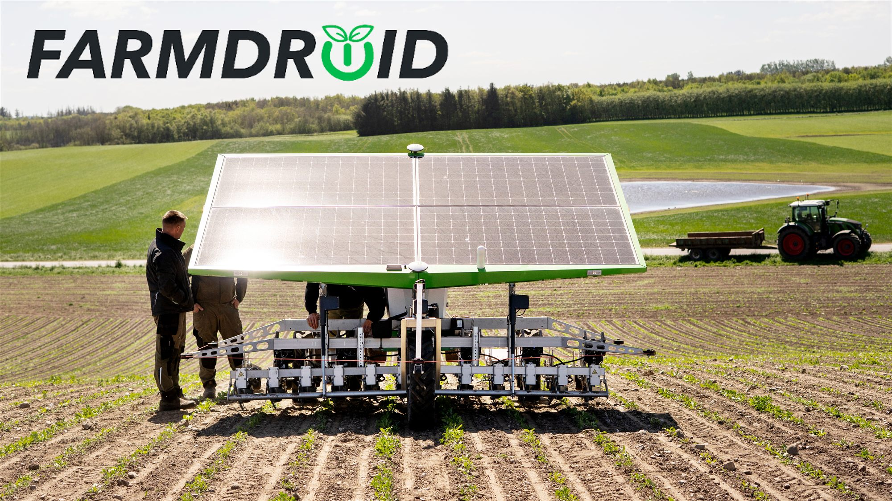

The Danish company FarmDroid has developed a solar-powered seeding and weeding robot that helps farmers with mechanical weed control and precision seeding. The result is a solution that combines innovation, operational reliability, and green technology in one single platform. At WS Technicals, we're pleased to have been part of this journey for many years and to contribute battery solutions to a project that is both Danish, innovative, and green.
From hard manual labour to intelligent automation
FarmDroid originates from a very down-to-earth need: making some of agriculture's toughest and most repetitive tasks smarter. Nikolai Tuborg, Brand and Marketing Manager at FarmDroid, explains how the company's origin is closely tied to the hands-on work of hoeing sugar beets and removing weeds manually, and to the ambition of developing a solution that could ease the workload without compromising results.
"Jens, one of the founders, stood in the field thinking: this is really a hard and tiring job, how can this be done smarter? And then he started building the first prototype based on that."Nikolai Tuborg, Brand and Marketing Manager, FarmDroid
Today, FarmDroid has evolved into a robotic solution that can both seed and weed with high precision. The robot operates using RTK GPS and therefore knows the exact position of the seeds it has sown itself. This makes it possible to remove weeds very close to the plants without damaging the crop. It's a clear example of how simple, robust technology can create significant value in practice.

A solution that makes a real difference in the field
FarmDroid was originally developed for organic farmers, where the need for alternatives to spraying is particularly high. The value is clear: the robot can take over a large part of manual weeding and significantly reduce the need for physical labour, labour that, in many cases, competes with less demanding types of work.
"You typically hire a lot of foreign seasonal workers as a more cost-effective labour force. You bring them in, and they work in teams walking around the fields doing this tedious work."Nikolai Tuborg, FarmDroid
Nikolai Tuborg highlights another important advantage. The alternative with manual labour requires time, coordination, and administration, and naturally also comes with risks such as human error, sick days, and absenteeism. With a FarmDroid, the farmer still needs to apply their professional expertise and monitor operations but avoids a large part of the administrative burden that comes with manual labour. According to Nikolai Tuborg, a robot can eliminate up to 80% of manual hand weeding, making the business case relatively straightforward for many farmers.
Green technology with a practical starting point
FarmDroid's solution is 100% green in operation, and this is a key part of the company's identity. However, what makes the story particularly interesting is that the green profile was not created purely from an idealistic vision, it also emerged from a practical need. As Nikolai Tuborg explains, the idea of using solar panels and batteries came from the simple fact that it was the smartest and most efficient way to make the robot operate independently in the field.
This approach says a lot about FarmDroid: it is not about technology for the sake of technology, but about building something that works in the real world. Something that can withstand dust, heat, long working days, and the demands of modern agriculture.
The battery is a crucial part of the solution
When a robot operates independently in the field, energy storage is not just a component, it's a prerequisite for the entire solution. Nikolai Tuborg highlights several key requirements for the batteries: operational reliability, stability, resistance to temperature variations, and the ability to communicate with the robot so the system can monitor battery condition and ensure that the robot shuts down correctly before the battery is depleted too far.
"Out in the field, you can have both extreme heat and cold, so the batteries have to be reliable. If the robot isn't running when the farmer needs to sow, that's a major problem, everything simply has to work."Nikolai Tuborg, FarmDroid
He also points out that price and quality must be meaningfully aligned. FarmDroid's customers are price-conscious farmers, so the solution must be both robust and economically viable. This balance is essential in the development of equipment for modern agriculture: the technology must be strong enough to ensure stable operation while still making sense as an investment.
At WS Technicals, we're pleased to supply batteries to a project where the requirements for quality and functionality are so clearly defined. When batteries must operate in environments with large temperature fluctuations, long operating times, and high expectations for uptime, it places demands on both the product and the collaboration. And that's exactly why it's meaningful for us to be part of the solution.
A technology aligned with the future of agriculture
While FarmDroid has primarily been a strong match for organic farming, Nikolai Tuborg also points to growing potential in the conventional market. Pressure on pesticide use is increasing, regulations are tightening, and chemicals are becoming more expensive. This creates a need for solutions that can reduce usage without compromising efficiency.
Here, FarmDroid sees an important role for its technology. With the company's PlusSpray solution, pesticide use can be reduced by up to 94%, according to Nikolai Tuborg, creating both economic and environmental value. At the same time, this reflects a broader development in agriculture, where automation, precision, and alternative cultivation methods are playing an increasingly important role.
"We believe we need to use fewer pesticides, and if you can reduce it by up to 94%, then you've practically eliminated most of it. It's about finding solutions that make things a little better tomorrow than they were today."Nikolai Tuborg, FarmDroid
A proud partner in a Danish success story
FarmDroid is a strong example of what can happen when practical insight, innovation, and the ambition to solve real problems come together. From a Danish idea born in the field to a green robotic solution with customers across multiple countries, the company demonstrates that the future of agriculture is not just about bigger machines and more chemicals, but about smarter technology, greater precision, and better resource utilization.
At WS Technicals, we're proud to be part of that story. Not only because FarmDroid is a Danish company with a strong green profile, but because the collaboration shows how the right battery solutions can support technology that makes a real difference, for the farmer, for operations, and for the future of agriculture.